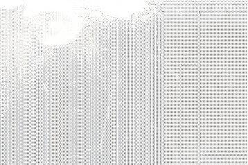
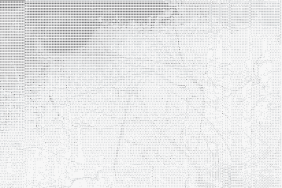
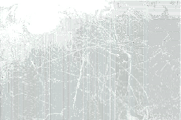
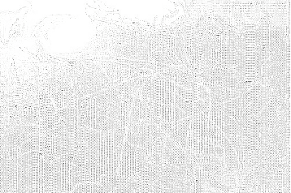
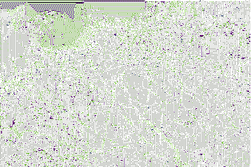

Next: In... Up: mutsaz inverno pozimi Previous: Significando
| http://reinehr.org/literatura/experimentalismo/soneto-dadaista-pozimihttp://reinehr.org/literatura/experimentalismo/soneto-dadaista-pozimi |

Neste frio que faz enquanto nossos olhos abraçam cansados o coração de quem partiu, antes mesmo de ter nascido, nada como experimentar, com café e fogão a lenha, a deslizar palavras e imagens goela abaixo.

A outrora pedaço no em
Entregues fome se ainda
Como de da veneno
Fala de cansa azougues
Trem os justo amarelo de
Volúpia mansa que tentação
Eles de cândidos perigosa é
Mas picasso mormaço leviano

No tesoura que uma nave
Na tanto na espacial e
Perdidos voluptuoso sublime em é
Sim o cadafalso cadeira sem
Mas falso o entretanto frio
Não com gigante assim se

Instruções para uma poesia dadaísta: pegue papeizinhos. Escreva neles palavras. Substantivos, adjetivos, pronomes definidos e indefinidos, artigos. Misture os papeizinhos. Defina o número de palavras por verso. Ou não. Defina regras para terminar o verso. Ou não. Pegue os papeizinhos em ordem aleatória e escreva o poema com as palavras na ordem que forem aparecendo. Vá vendo o resultado a medida em que o poema está sendo feito. Pouca coisa faz sentido, mas quando faz, é profundo. Profundo mesmo! Outra experiência que pode ser feita é fazer vários poemas dadaístas com o mesmo grupo de palavras. Ei! Será que isso é uma idéia original? Não sei, mas vou fazer isso outra hora. Escolherei 87 palavras e escreverei 13 poemas com essa técnica! Afudê! (autoempolgação deveria ser o ópio do povo)
87 - 5 = 82 - 4 = 78 - 6 = 72 - 4 = 68 - 5 = 63 - 4 = 59 - 6 = 53 - 4 = 49 - 5 = 44 - 4 = 40 - 6 = 36 - 4 = 32 - 5 = 27 - 4 = 23 - 6 = 17 - 4 = 13 - 6 = 7 - 1 = 6 - 6 = 0 (= 19 versos)
19 - 5 = 14 - 4 = 10 - 3 = 7 - 3 = 4 - 4 = 0. Taí a fórmula do meu próximo poema dadaísta. Resumindo, será um poema com 19 versos, dividido em estrofes de 5, 4, 3, 3 e 4 versos respectivamente, com 5, 4, 6, 4, 5, 4, 6, 4, 5, 4, 6, 4, 5, 4, 6, 4, 6, 1, 6 palavras em cada verso.

Felipe Fonseca 2010-09-24